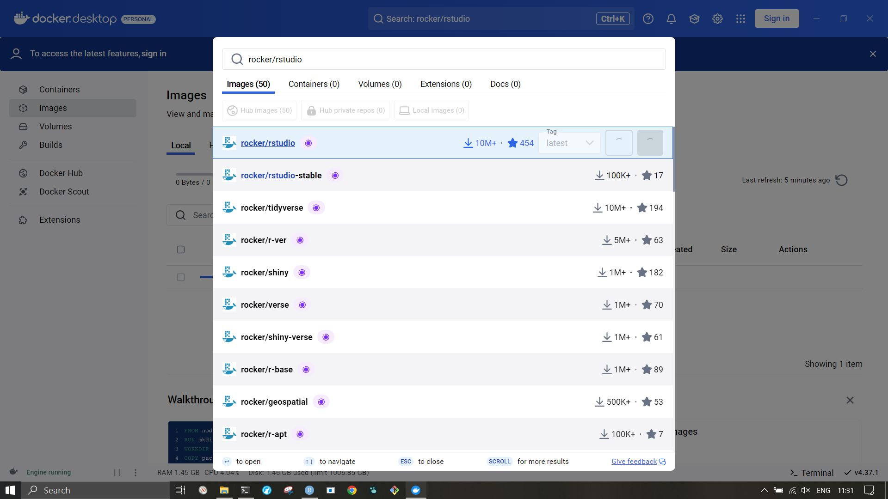

Containers (1): An Overview
Introduction to containerization and the practical use of Docker-like tools.
You might have heard about “containerization” with Docker. Docker has been labeled “the Holy Grail of reproducibility” in The Open Science Manual by Claudio Zandonella Callegher and Davide Massidda (2023). Although containerization is an immensely useful Open Science tool worth striving for, the Holy Grail is an inaccurate metaphor, because
- (i) Unlike The Grail, Docker is easy to find and accessible.
- (ii) Docker alone does not make a reproducible workflow; some of its capability is occasionally confused with package version management.
- (iii) Docker has issues, some of them mitigated by configuration adjustment or switching to “Podman”.
Time to explore what containers really are, and what they are not.
Overview
There are many good applications for containers.
One advantage of a container is its mobility: you can “bring it with you” to other workstations, host it for colleagues or readers, use cloud computing, mostly without having to worry about installation of the components. Containers pay off in complicated server setups and distributed computing.
Yet they are also a matter of good open science practice: you can document build instructions for a reproducible analysis environment, or store and publish a whole image right away.
In this notebook, you will find installation instructions, useful commands, references, and a loose assembly of general and almost philosophical topics to prime you on the complications and misconceptions surrounding containerization.
There are numerous useful build instructions and container images already out there, which you can simply pull and run.
This is an easy, entry level application of container software like Docker, covered in an introductory tutorial.
A second step is to set up and deploy a self-build custom container, which I demonstrate step-by-step in a slightly more advanced tutorial.
This is intended to be a rather general test case, enabling you to later configure more specific container solutions for your own purpose.
For example, you will learn how to spin up an existing rocker/rstudio container, and even modify it with additional system components and libraries.
For relevant INBO-specific use cases, make sure to check out the containbo repository which documents even more tipps and tricks assembled during my humble (but mostly succesful) attempts to get INBO R packages to run in a container environment.
I also present Podman as a full replacement for Docker, and recommend to give it a try.
On Windows, installation, configuration, and management of containers runs via the docker desktop app.
However, this series of tutorials also covers (and in fact focuses on) the terminal-centered steps to be executed on a Linux computer or within a WSL.
Generally, if you are an INBO user, it is recommended to contact and involve your ICT department for support with the setup.
General References
I follow other tutorials available online, and try to capture their essence for an INBO context. Hence, this series is just an assembly of other tutorials, with references - no original ideas to be found herein, but nevertheless some guidance. Here is an incomplete list of online material which you might find helpful.
- https://docs.docker.com
- https://podman.io/docs, https://github.com/containers/podman/blob/main/docs/tutorials/podman-for-windows.md
- https://github.com/inbo/contaINBO
- https://wiki.archlinux.org/title/Podman
- https://jsta.github.io/r-docker-tutorial/02-Launching-Docker.html
- https://medium.com/@geeekfa/docker-compose-setup-for-a-python-flask-api-with-nginx-reverse-proxy-b9be09d9db9b
- https://testdriven.io/blog/dockerizing-flask-with-postgres-gunicorn-and-nginx
- https://arca-dpss.github.io/manual-open-science/docker-chapter.html
- https://do4ds.com/chapters/sec1/1-6-docker.html
- https://colinfay.me/docker-r-reproducibility
- https://solutions.posit.co/envs-pkgs/environments/docker
Installation
The installation procedure is documented here.
Docker comes with the Docker Desktop app. That app by itself is trivial and hardly worth a tutorial.
Microsoft Windows
Navigate to the download site for Docker on Windows. Download the “App” (newspeak for: graphical user interface to a software tool). Install it.
Note for INBO users: you might choose to select Hyper-V, instead of WSL, against Docker’s recommendation (WSL is not working in our enterprise environment; however, we are trying to improve and ICT might help). You probably do not have admin rights, which is good. To re-iterate: ask our friendly ICT helpdesk for support right away.

Using a convenient app is possible with “Docker Desktop”.
On Windows, you can download and install it with administrator rights.
On Linux, that same docker-desktop is available for installation.
Yet while automating some aspects, the app is not entirely transparent on telemetry and advertisement; some anti-features are included (e.g. required login).
This is unfortunate, because it makes the app less open for more privacy-concerned users.
The terminal aspect of Docker is entirely free and open source, and universally accessible. This is why the rest of this tutorial will focus on terminal access.
Terminal
On the Windows terminal or Linux shell, you can install docker as a terminal tool.
On Windows, this comes bundled with the App; the steps below are not necessary. There might be ways to get around the Desktop App and facilitate installation, either via WSL2 or using a windows package manager called Chocolatey.
Either way, note that you need to run the docker app or docker in a terminal as administrator.
More info about the installation on your specific Linux operation systems can be found here. The procedure for Debian or Ubuntu-based distributions involves trusting dockers gpg keys and adding an extra repository, some caution is warranted.
sudo apt update && sudo apt install docker-ce docker-buildx-plugin # debian-based
# sudo pacman -Sy docker docker-buildx # Arch Linux
As you will notice, this installs a “CE” version of Docker, docker-ce.
CE stands for “community edition”, as opposed to “enterprise edition” (cf. here).
Many features which you would take for granted in this kind of software (security, consistency, scalability) are handled differently in the two editions, thus it is worth knowing the difference and considering the alternatives.
For users to be able to use Docker, they must be in the “docker” group.
(Insert your username at <your-username>.)
sudo usermod -a -G docker <your-username>
For this change to take effect, log off and log in again and restart the Docker service if it was running.
Containers are managed by a system task (“service” and “socket”) which need to be started.
Most likely, your Linux uses systemd.
Your system can start and stop that service automatically, by using systemctl enable <...>.
However, due to diverse security pitfalls, it is good practice to not keep it enabled permanently on your system (unless, of course, if you use it all the time).
On a systemd system, you can start and stop Docker on demand via the following commands (those will ask you for sudo authentification if necessary).
systemctl start docker
systemctl status docker # check status
systemctl stop docker.socket
systemctl stop docker.service
For aficionados, docker actually runs multiple services: the docker service, the docker socket, and the container daemon containerd.
You can check the Docker installation by confirming the version at which the service is running.
docker --version
Congratulations: now the fun starts!
With docker installed, the next step is to run a container image which someone else has prepared and hosted online, which you can read about in the next tutorial.
The Holy Grail?
Yet to know what containers can achieve and what not, it is useful to understand their general workings, quirks, and relation to other tools.
Relation to Version Control and Version Management
Back to the initial paradigm of reproducibility: What exactly is the Open Science aspect of containerization?
This question might have led to some confusion, and I would like to throw in a paragraph of clarification. A crucial distinction lies in the preparation of Dockerfiles (i.e. build instructions) and the preservation of images (i.e. end products of a build process).
One purpose of a Dockerfile may be that you document the exact components of your system environment.
You start at a base image (e.g. a rocker, short for “R-docker”, a container pre-configured with an R programming environment) and add additional software via Dockerfile layers.
This is good practice, and encouraged: if you publish an analysis, provide a tested container recipe with it.
However, this alone does not solve the problem of version conflicts and deprecation. Documenting the versions of packages you used is an extra step, for which other tools are available:
- It is good practice to report the exact versions of the software used upon publication (see here, for example). This is best achieved via virtual environments.
- Version control such as
gitwill track the changes within your own texts, scripts, even version snapshots and Dockerfiles. - Finally, docker images can serve as a snapshot of a (virtual) machine on which your code would run.
The simple rule of thumb is: use all three methods, ideally all the time.
Virtual environments. Version control. Snapshots.
Get used to them. They are easy. They will save you time and trouble almost immediately.
But unless you use them already, you might require some starting points and directions: here we go.
The second point, version control, is a fantastic tool to enable open science, and avoid personal trouble.
It might have a steep learning curve, yet there are fantastic tools to get you started.
You will find starting points and help in other tutorials on this website.
The other point, version documentation, is trivially achieved by manual storage of currently installed versions via sessionInfo() in R, or pip freeze > versions.txt for Python.
A small step towads somewhat more professionalism are virtual environments.
Those exist for R (renv) or Python (venv).
The pak library in R can handle lock files conveniently with pak::lockfile_install().
Then there is the integration of R, Python and system packages in conda-like tools (e.g. micromamba).
There are even system level tools, for example nix and rix.
The methods are not mutually exclusive: all Dockerfiles, build recipes, and scripts to establish virtual environments should generally be subject to version control.
However, documenting the exact tools and versions used in a project does not guarantee that these versions will be accessible to future investigators (like oneself, trying to reproduce an analysis five years later). This is where Docker images come in. Docker images are the actual containers which you create from the Dockerfile blueprints by the process of building. In the “tiny home” metaphor: your “image” is the physical (small, but real, DIY-achievement) home to live in, built from step-by-step instructions. Think of a Docker image as a virtual copy of your computer which you store for later re-activation. For example, a collection of images for specific analysis pipelines at INBO are preserved at Docker Hub/inbobmk. We consider these “stable” versions because they could be re-activated no matter what crazy future updates will shatter the R community, which enables us to return to all details of previous analyses.
Some confusion might arise from the fact that managing these image snapshots is achieved with the same vocabulary as version control, for example you would “commit” updated versions and “push” them to a container repository.
Even more confusion might arise from the fact that you also find ready-made images online, e.g. on Docker Hub, or Quai, or elsewhere. These provide images of (recent) versions of working environments, supposed to stand in as starting points for derived containers. Hence, be aware of the dual use case of images: (i) the dynamic, universal base image which improves efficiency and (ii) the static, derived, bespoke image which you created for your analysis (shared with the world for reproducibility).
And, once more, those images are not a “holy grail” solution: they are not entirely system independent (e.g. processor architecture), and they might occupy a considerable amount of hard disk space (Dockerfile optimization is warranted). Ideally, to be a “full stack open science developer”, you want to implement a mixed strategy consisting virtual environments and containers, wrapped in version control and stored in a backup image.
“Because Roots Are Important”: Rootless Mode1
One of the main criticism about Docker is the necessity to run in a privileged user environment, which is indeed a security issue.
This may refer to the system process requiring elevated privileges, or users in the docker system group effectively having superuser privileges.
Because of the risk of privilege escalation in case of a container breakout, this situation would worsen existing vulnerabilities, of which there are some in Docker containers.
Historically, Docker could not run “rootless”, i.e. without elevated privileges.
This seems to have changed, according to Docker.
Some caution is still warranted: the setup procedure requires downloading and running shell scripts (which must be checked); the deamon still builds on systemd (usually root level); some functionality is limited.
On the other hand, there is Podman (cf. the Podman tutorial).
It used to require almost the same extra steps as the docker-rootless to work rootless, but we found that these requirements are now met per default.
It seems that, at the time of writing, Docker and Podman have identical capabilities in terms of rootless containerization.
The remaining difference is that Podman seems to have more sensible default settings.
It might therefore be worth considering and exchanging both tools.
But, on that line, how about private repositories? More generally, how would we get (personal) data from our host machine to the container?
Data Exchange and Secrets
COPYing data
Arguably, among the rather tricky tasks when working with containers is file exchange. There are several options available:
COPYin the Dockerfile (orADDin appropriate cases)- “bind mounts”
- volumes
- R’s own ways of installing from far (e.g.
remotes::install_github())
For the use case of installing R packages from a private git repo, there are several constraints:
- It best happens at build time, to enable all the good stuff:
--rm, sharing, … - Better keep your credentials (e.g. ssh keys, access tokens) off the container, both system side and on the R side.
- On the other hand, updates can often happen by re-building.
In this (and only this) situation, the simple solution is to copy a clone of the repository to the container, and then install it.
The git clone should reside within the Dockerfile folder.
Then the Dockerfile section can look like the following:
# copy the repo
COPY my_private_repo /opt/my_private_repo
# manually install dependencies
RUN R -q -e 'install.packages("remotes", dependencies = TRUE)'
# install package from folder
RUN R -q -e 'install.packages("/opt/my_private_repo", repos = NULL, type = "source", dependencies = TRUE)'
This way of handling private repositories seems to be good practice, for being simple, secure, and generally most feasible.
The next best alternative would be mounting the ~/.ssh folder from the host to the container via -v.
You can finde some more options on the containbo repository.
Secrets
(This section was added after an instructive mail by Thierry Onkelinx)
It is quite obvious that, in the (common) case that docker build files are shared, one would not want to share secret information such as passwords or login tokens. However, login tokens might required to correctly spin up an image in the first place. Here is an example.
A number of installation commands for R packages which are exchanged via github require a personal access token (GITHUB_PAT) environment variable to work without restrictions.
Critically, the GITHUB_PAT is linked to your personal account and repository privileges.
It is a bad idea to pass it along as a regular build variable:
the token is then permanently available to others in the Docker.
The safe way to work is to pass such information as a secret. In the Dockerfile, the build instructions could look like this example:
RUN --mount=type=secret,id=githubpat,env=GITHUB_PAT Rscript -e 'renv::install("trias")'
This line retrieves the secret githubpat and places it in the environment variable GITHUB_PAT for the duration of the command’s runtime.
Building the image works with the secret argument.
docker build --pull --secret id=githubpat,env=GITHUB_PAT --rm --tag
<github_user>/<repository>:<tag> --progress=plain .
In this case, the command retrieves the contents of the environment variable GITHUB_PAT from your local computer and places it in the secret githubpat.
These instructions give you a direction when specifically working with R packages. For other scenarios, there are different solutions. The main take-home message is that docker files must not reveal your secrets when they are shared, there are ways to work around it.
Useful Commands
You will certainly encounter docker --version, docker run, and docker build in this series of tutorials, and there are certainly more settings and tweaks on these commands to learn about.
There are other Docker commands which might help you out of a temporary misery.
- First and foremost,
docker --helpwill list the available commands and options. docker run -it --entrypoint /bin/bash <image>ordocker run -it <image> /bin/bashbrings you to the shell of a container; you can update, upgrade, or just mess around. Trybashorbin/shas alternatives.docker imageswill list your images in convenient table format; the-qflag returns only IDs.docker inspect <image-name or image-id>brings up all the configuration details about a specific image; you can, for example, find out its Docker version and network IP address.docker ps(“print status”) will list all running containers;docker stop $(docker ps -a -q)will stop them all.- Be aware that docker images occupy a considerable amount of hard disk space.
docker rmi <image-name or image-id>will remove an image;docker rmi $(docker images -q)will remove all your images. The commanddocker system pruneprovides an interactive cleanup,docker system prune --allwill clean up non-interactively. Of course, you get to keep the Dockerfiles. docker commitanddocker diffsupport the creation and maintenance of snapshots of processed images, which you could keep locally, or upload them to an online storage such as Docker Hub.
There are a gazillion more to choose and use. A more complete list can be found here, for example, and the Docker docs are your go-to source.
One more note on the ENTRYPOINT:
It defines through which terminal or script the user will access the container.
For example, /bin/bash, /usr/bin/bash or bin/sh are the bash (Linux terminal on the container).
Rocker images usually enter into an R console, or monitor an RStudio server, via an /init script.
The flask container above runs a script which hosts your website and Python.
Anything is possible.
You can define an entrypoint in the Dockerfile (i.e. set a default), or overwrite it on each run.
Summary
In this series of tutorials, I demonstrate the basics of containerization with Docker and Podman. There are convenient GUI apps, and sophisticated terminal commands, the latter are much more powerful. This particular notebook assembled references, useful commands, information about the installation of Docker, and general considerations.
This is the central node of a series of tutorials; the others are:
- Running containers: https://tutorials.inbo.be/tutorials/development_containers2_run
- Building containers: https://tutorials.inbo.be/tutorials/development_containers3_build
- Advanced Build Recipes: https://github.com/inbo/containbo
- Switching to Podman: https://tutorials.inbo.be/tutorials/development_containers4_podman
Personally, I find the concept of containerization fascinating, and was surprised how simple and useful of a trick it is.
Containerization offers the advantages of modularity, configurability, transparency (open science: share your rocker file), shared use … There are some manageable pitfalls with respect to admin rights and resource limitation.
This was just a quick tour; I brushed over a lot of novel vocabulary with which you will have to familiarize yourself. Your head might be twisting in a swirl of containers by now. I hope you find this overview useful, nevertheless. Thank you for reading!
-
*
Generated by Google Gemini (2025-02-21), modified. Prompt `I would love to have a comic-style image of a whale in a grail. The grail should be golden and shiny, resembling the holy grail. The whale on top is a reference to the docker logo (you may add sketchy little container blocks on its back).` ↩︎
-
Reference to the film “La Grande Bellezza”. ↩︎